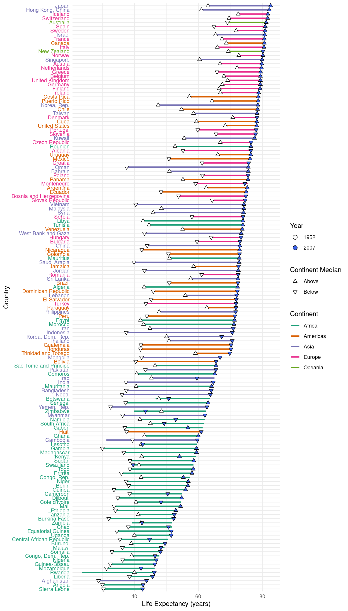

For my data visualization class, I made a visualization of the gapminder data on life expectancy. For each country, I converted the trajectory of their life expectancy over time into a single line, then marked the oldest and most-recent data points for each country. Each of those data points points either up or down to indicate whether it is above or below the median life expectancy for that country's continent in that year.
I like this visualization because it lets you see a lot all at once. Sorting by the maximum lets you quickly see if the highest life expectancy is not the most recent, if the specified points are not at the end. Additionally, linking the arrows to the continent median, rather than the overall median, makes for a more even comparison. Except, perhaps, for oceania.
